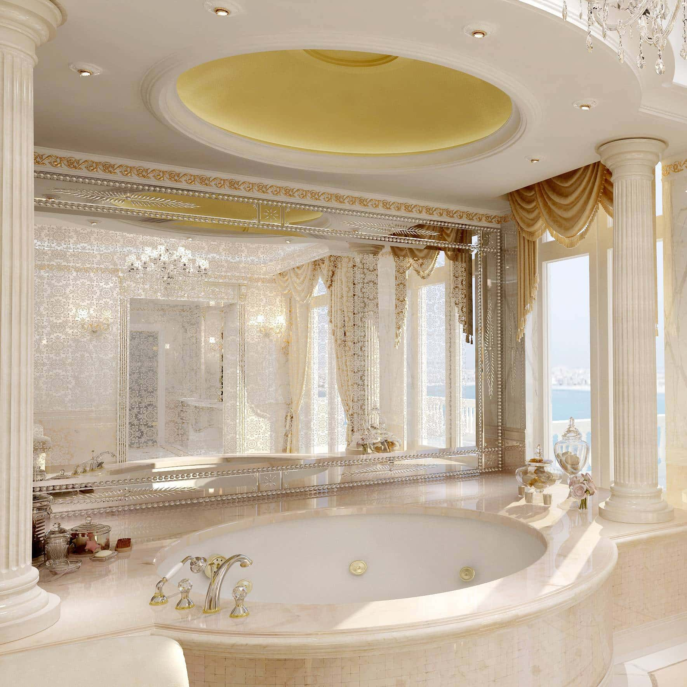
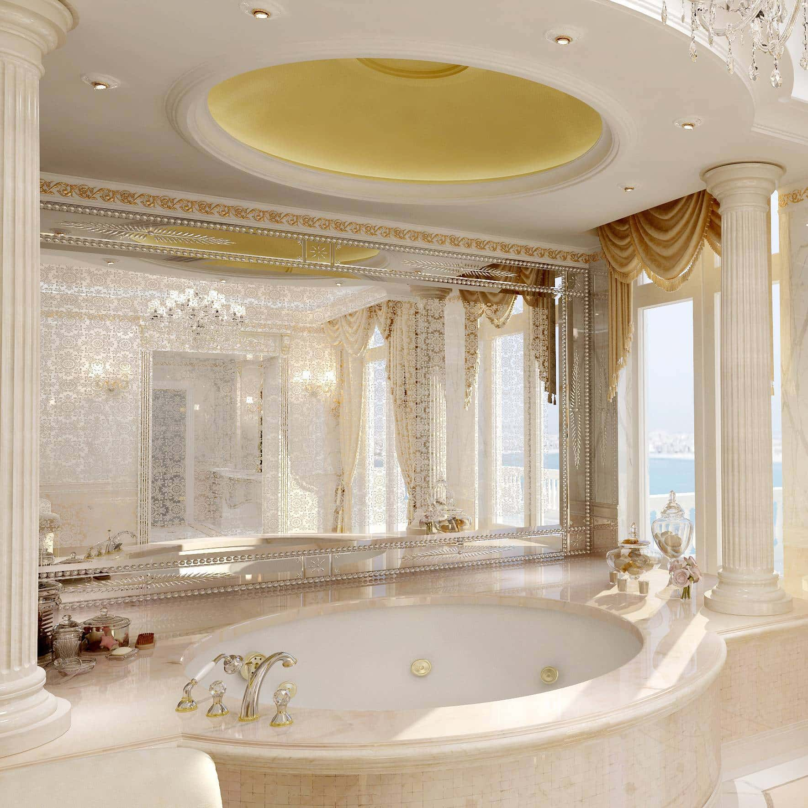

Classic
Classic design interior refers to a style of interior design that draws inspiration from historical European aesthetics, particularly from ancient Greek and Roman architecture. This design style is characterized by a sense of elegance, symmetry, and timeless beauty.
Key :
Symmetry
Sornate Details
Antique Furniture
 

Unusual Wall
When it comes to the classic style, the architectural solutions come to the fore, providing a backdrop for furniture and accessories. That's why it's best to start your adventure with the classic style with the walls.
Color Scheme
The color scheme of classic interiorsis subdued and uniform.It is mainly based on creamyshades of white, beige andwarm browns, being rathercalm and dignified.
Furniture
Curtain fabrics and, on occasion, sofa and armchair upholstery and cushions match the overall look. More vibrant color accents are used sparingly; usually these are greens and blues.

Accessories
There is some gold or silver in the accessories, but in moderation, in order to avoid kitsch. Finishes are subtle and conventional, without flashy contrasts.